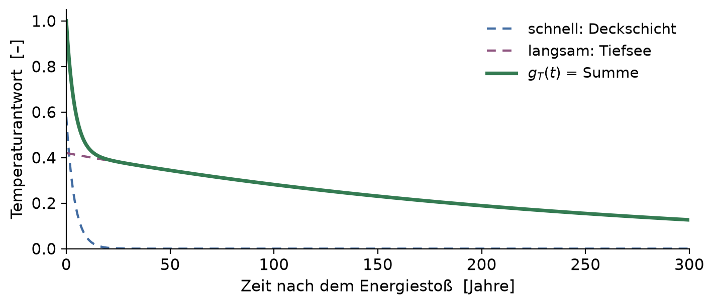
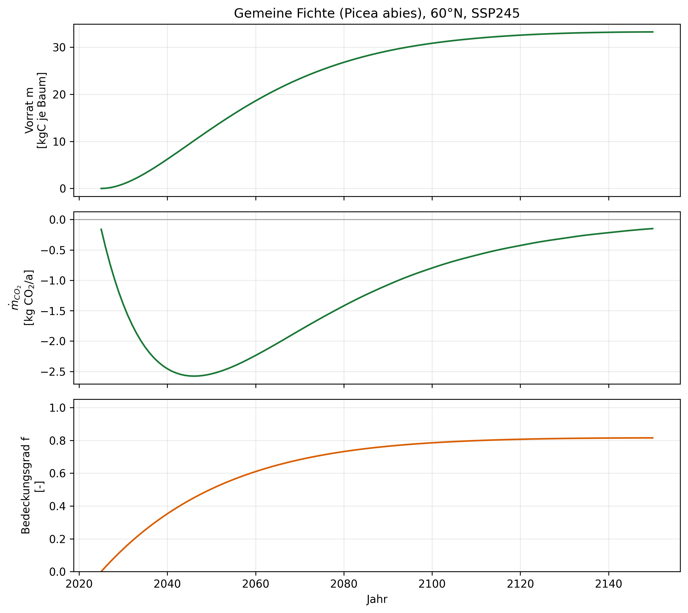
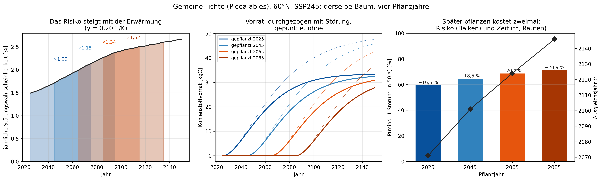
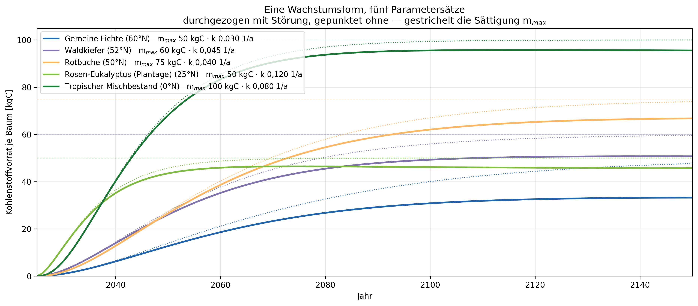
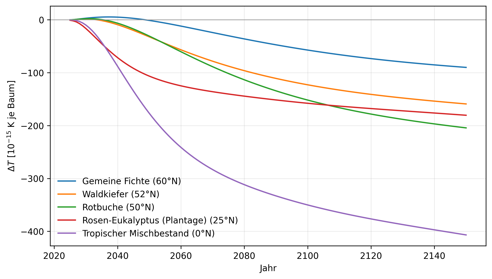
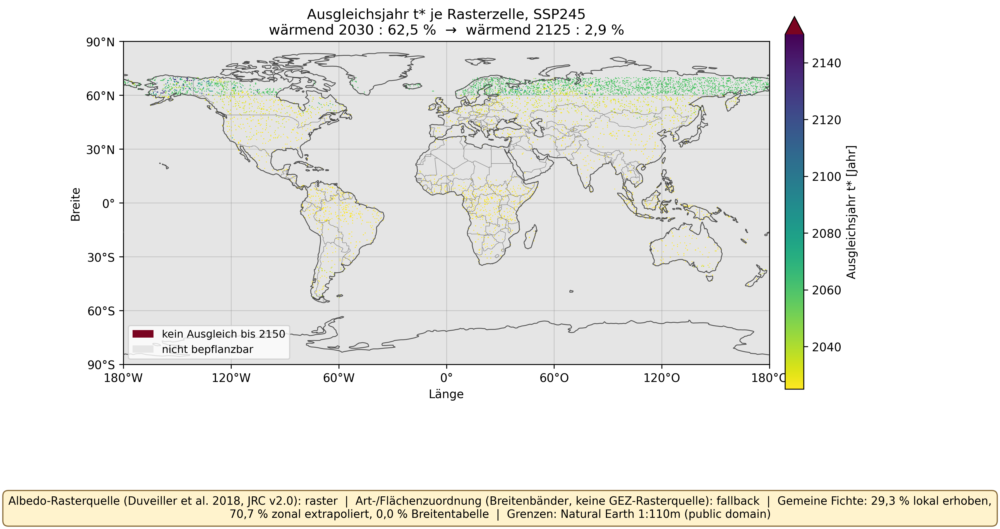
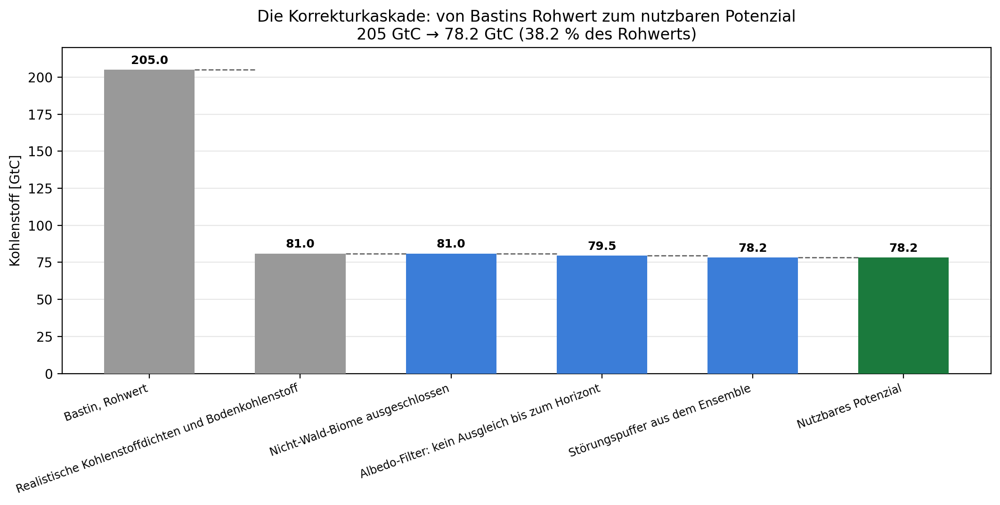
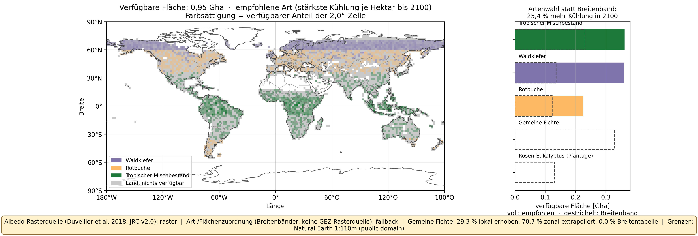
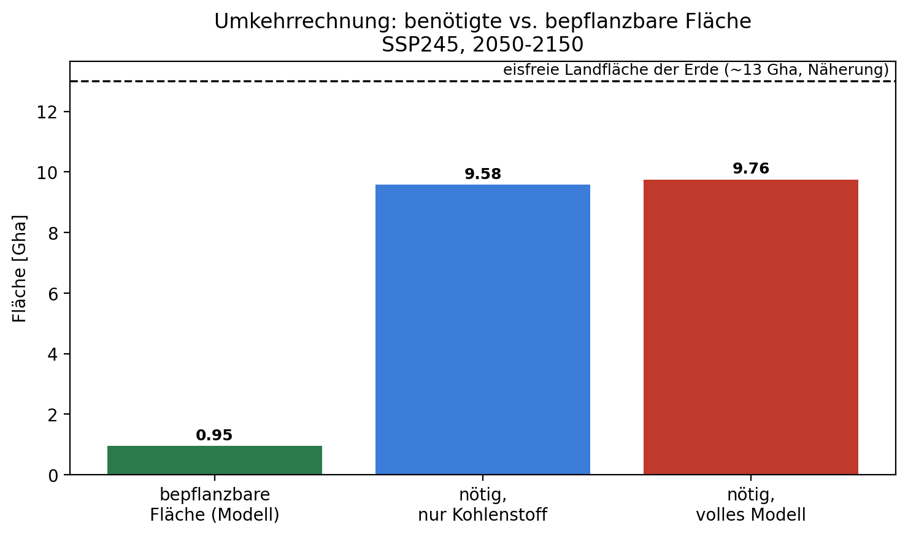

Die Natur betreibt seit Hunderten von Jahrmillionen Kohlenstoffabscheidung, planetar, angetrieben von Sonnenlicht, ohne Kapitalkosten.
Wir schlagen jetzt vor, Maschinen zu bauen, die dasselbe tun.Warum?
Naive Rechnung
ein Baumbindet über sein Leben rund 2 t CO₂.gebrauchtwerden rund 300 Gt CO₂ Entnahme.300 Gt ÷ 2 t = 150 Milliarden Bäume.
Diese Rechnung kennt nur Kohlenstoff — keinen Ort, keine Zeit, kein Risiko. Am Ende des Vortrags steht sie noch einmal da, mit allen dreien. Die Antwort ist dann eine andere.
Kein Strohmann: so stand die Rechnung in Science
205 GtC
Bastin et al. 2019 · auf 0,9 Gha
→ 81 GtC
korrigiert binnen Monaten
Bastin et al. 2019 in Science: 0,9 Gha zusätzliche Waldfläche, 205 GtC zusätzlicher Speicher.
Eines der meistdiskutierten Klimapapiere überhaupt — und die wissenschaftliche Grundlage der Kampagne „eine Billion Bäume“.
Binnen Monaten korrigierte die Fachwelt den Wert auf rund 81 GtC. Der Rest der Kritik kam als Kriterienkatalog.
Die naive Rechnung ist kein Strohmann: Sie ist publiziert, hoch zitiert und politisch wirksam geworden. Genau deshalb lohnt es sich, nicht ihr Ergebnis zu korrigieren, sondern ihre Bilanz.
Bastin et al. 2019, Science 365, 76–79; Technical Comments: Veldman et al. (2019), Friedlingstein et al. (2019), Science 366
Überblick
Bäume
Was ein Baum mit Kohlenstoff und Sonnenlicht macht
Was Bäume tun
Überblick der biophysikalischen Waldwirkungen: Lawrence et al. (2022); Hasler et al. (2024)
Chapman-Richards ist die Standardform der Ertragskunde. Die drei Parameter sind für diesen Vortrag gesetzt — an IPCC 2019 Refinement und Seidl et al. (2017) orientiert, nicht daraus entnommen (Backup: Artparameter)
Restanteil eines CO₂-Pulses nach der Zeit t — nach 75 Jahren: vorindustrielle Idealkurve (Joos et al. 2013) rund 44 %, eigene Rechnung unter SSP2-4.5 dagegen 70 %
Eine Tonne raus ist nicht eine Tonne weg: Ozean und Landbiosphäre füllen die Lücke teilweise wieder auf. Die heutige Lücke ist die Summe aller früheren Aufnahmen, jede mit ihrem Restanteil gewichtet. Und: je heißer die Welt, desto länger wirkt jede Tonne nach.
Impulsantwort des Kohlenstoffkreislaufs: Joos et al. (2013)
$A_{\mathrm{Baum}}$ Standfläche eines Baums (≈ 2000 Bäume/ha) · $\alpha$ Reflexionsgrad · $\dot q_{\mathrm{kurz}}$ kurzwellige Einstrahlung am Boden [W/m²] · $\langle\cdot\rangle$ Mittel über den Jahresgang · $f$ Bedeckungsgrad 0…1, folgt dem Vorrat: $f = (m/m_{\max})^{\beta}$ mit $\beta = 0{,}5$
Ein borealer Baum absorbiert im Jahresmittel 53,6 W mehr als die schneebedeckte Fläche, die er ersetzt — aber nicht gleichmäßig: im Frühjahr, wenn Schnee und Sonne zusammentreffen, brennt dieser Scheinwerfer mit dem Zwei- bis Dreifachen des Jahresmittels.
Δα gemessen: Duveiller et al. (2018), Übergang Nadelwald↔Grasland, 55–65°N — lokal erhoben auf rund 20 % der Landmaske, sonst zonal extrapoliert (Backup). Standfläche und Kronenalbedo sind gesetzt
Klima
Was aus den Flüssen des Baums im Klima wird
Wo ziehen wir die Grenze?
Ein Kontrollvolumen: Erde und Atmosphäre zusammen. Nur Strahlung überquert seine Grenze — keine Masse, keine Arbeit.
keine Fläche im Term — CO₂ mischt sich global, es ist egal, wo der Baum steht
$A_{\mathrm{CO_2}}$
≈ 1,76·10⁻¹⁵ W m⁻² kg⁻¹ Strahlungswirkung je kg zusätzliches CO₂ in der Atmosphäre — kalibrierte Konstante, keine Herleitung aus erstem Prinzip
Mehr CO₂ heißt: weniger $\dot Q_{\mathrm{lang}}$ verlässt die Erde — genau der Mechanismus von eben. $A_{\mathrm{CO_2}}$ ist diese Wirkung, kalibriert pro Kilogramm. Kein Flächenterm: CO₂ mischt sich global.
Der ganze Unterschied steckt im Flächenfaktor: Kohlenstoff wirkt überall, Albedo nur dort, wo der Baum steht. Damit ist die rechte Seite der Energiebilanz vollständig.
Lokale Antriebe je Breitengrad: Betts (2000); Duveiller et al. (2018). τ_atm ≈ 0,8 leistet, was Strahlungskerne leisten — Streuung über sechs Kerne rund ±15 % (Hasler et al. 2024)
Und die Verdunstung? Sie überquert diese Grenze nicht
Sie ist intern.
Verdunstung verschiebt Energie von der Oberfläche in die Atmosphäre. Beides liegt innerhalb der Grenze. In der Bilanz am Oberrand gibt es keinen Term, den sie besetzen könnte — sie ist nicht vernachlässigt, sie hebt sich exakt auf.
Wirkungslos ist sie deshalb nicht.
Sie wirkt indirekt, über zwei Kanäle, die sehr wohl in der Bilanz stehen: mehr Wasserdampf verringert $\dot Q_{\mathrm{lang}}$, mehr tiefe Wolken erhöhen die Reflexion und verringern $\dot Q_{\mathrm{kurz}}$. Beides sind Rückkopplungen auf die Erwärmung — sie stecken in Λ, nicht in φ.
Das ist die Näherung, die wir machen.
Λ ist am globalen Modellensemble kalibriert. Solange die aufgeforstete Fläche klein gegen die Erdoberfläche ist, verschiebt sie das globale Λ nicht messbar. Bei kontinentaler Aufforstung gilt das nicht mehr — dort wäre ein Erdsystemmodell nötig.
Lokal kühlt die Verdunstung deutlich, global fast nicht. Das ist ein Ergebnis der Systemgrenze — kein Rundungsfehler und kein Weglassen.
Lokale Kühlwirkung: Alkama & Cescatti (2016); Λ als Summe aller Rückkopplungen: Sherwood et al. (2020)
Der Antrieb im Überblick
Baum$\dot m(t)$
$-\tfrac{44}{12}$
Atmosphäre$\dot m_{\mathrm{CO_2}}$
$g_C$ · Faltung
CO₂-Lücke$\Delta m_{\mathrm{CO_2}}$
$A_{\mathrm{CO_2}}$
$\varphi_{\mathrm{CO_2}}$kühlt · global
Antrieb$\varphi = \varphi_{\mathrm{CO_2}} + \varphi_\alpha$Übergabe an das Klimamodell
Abstrahlung$\dot Q_{\mathrm{lang}}$ — wie viel Wärme hinausgeht
Temperatur$\Delta T(t)$
die wärmere Erde strahlt mehr ab — genau das ist Λ · T
Λ und C sind keine erfundenen Zahlen — sie fassen zusammen, wie das Erdsystem als Ganzes reagiert. Unser Baum ist nur einer von vielen Antrieben.
Von der Bilanz zur Kurve — dieselbe Struktur wie beim CO₂

$$T(t) = \int_0^t g_T(t-t')\,\varphi(t')\,dt'$$
$g_T$
Antwort der Temperatur auf einen kurzen Energiestoß — schnell über die Oberfläche, langsam über den tiefen Ozean
Diese Antwort wird nicht hergeleitet, sondern an vollständige Erdsystemmodelle angepasst. Das ist die Nahtstelle.
Die heutige Erwärmung ist die Summe aller früheren Antriebe — jeder gewichtet mit dem, was von ihm noch nachwirkt. Genau das wertet FaIR aus.
Kalibrierung am CMIP6-Ensemble: Millar et al. (2017); Leach et al. (2021); FaIR v2.2, im IPCC AR6 verwendet
Aufbau: ein Baum, ein Ort, ein Zeithorizont
Ein Baum an einem Ort
Gemeine Fichte (Picea abies) an ihrem Referenzstandort 60°N — die Beispielparametrierung aus dem Baum-Kapitel
Szenario
SSP2-4,5, Zeithorizont 2025–2150
Bezugseinheit
ein einzelner Baum — nicht ein Hektar, keine Plantage
Aus der Herleitung
$m(t) \;\to\; \varphi_{\mathrm{CO_2}}(t),\ \varphi_\alpha(t) \;\to\; \Delta T(t)$, je Baum
Frage der folgenden Folien
Wann kippt $\Delta T(t)$ dauerhaft ins Negative ($t^*$) — und wovon hängt dieser Zeitpunkt ab?
Alles, was jetzt folgt, ist Ergebnis derselben Kette, die wir eben hergeleitet haben — nur jetzt an einem konkreten Baum ausgewertet, nicht mehr symbolisch.
Ein Baum an einem Ort: die Eingangsgrößen

Was hier zu sehen ist
$m(t)$ oben: Vorrat in kgC. Die Sättigung von 50 kgC wird nie erreicht — 2150 stehen 33 kgC.
$\dot m$ Mitte: jährliche Nettoaufnahme, Maximum im Alter von 21 Jahren.
$f$ unten: Bedeckungsgrad 0…1. Er skaliert den Albedo-Kanal — bei $f = 0$ keine Albedo-Wirkung.
Der Vorrat m(t) wächst nach Chapman-Richards; der CO₂-Fluss ist in der Jugendphase am größten und schwächt sich danach ab; der Bedeckungsgrad f nähert sich erst nach Jahrzehnten seinem Sättigungswert. Diese drei Kurven sind der Input für alles Folgende.
Gemeine Fichte (Picea abies), 60°N, SSP2-4,5, volles Modell — der gezeigte Vorrat ist bereits um die erwartete Störung gemindert
Oben der Antrieb φ [W/m²], unten die Temperatur ΔT [K] — beide je Baum.
Grün CO₂ (kühlt), orange Albedo (wärmt), schwarz die Summe. Ihr Nulldurchgang ist t*.
Antrieb kippt 2063, Temperatur 2071. Die acht Jahre sind die Wärmekapazität C.
CO₂-Aufnahme kühlt, die dunklere Krone erwärmt — ab t* = 2071 überwiegt dauerhaft die Kühlung. Einziger echter Unterschied zwischen Antrieb und Temperatur: thermische Trägheit — der Antrieb kippt acht Jahre vor der Temperatur.
Gemeine Fichte (Picea abies), 60°N, SSP2-4,5, volles Modell (log. CO₂, Albedo, Störung im Erwartungswert, Senkensättigung)
Wann pflanzen? Warten kostet doppelt

Was hier zu sehen ist
Links: Störungswahrscheinlichkeit über die Zeit, je Kohorte ihr 50-Jahre-Fenster.
Mitte: Vorrat, durchgezogen mit Störung, gepunktet ohne. Der Abstand einer Farbe sind die Risikokosten, der Versatz zwischen den Farben die Zeitkosten.
Rechts: Balken = P(mindestens eine Störung), Rauten = t* auf der rechten Achse.
Dieselbe Fichte, vier Pflanzjahre. Das jährliche Störungsrisiko folgt der Hintergrunderwärmung (p = p₀·exp(γ·T)) und ist 2085 das 1,52-Fache von heute. Im selben Alter von 50 Jahren fehlen deshalb 20,9 % des Vorrats statt 16,5 % — und t* rutscht von 2071 auf 2146: 75 Jahre Verzug für 60 Jahre Warten.
SSP2-4,5, Picea abies, 60°N, volles Modell — Störungsrate an Seidl et al. 2017 orientiert; γ = 0,20 1/K ist eine Setzung für alle fünf Arten, kein artspezifischer Literaturwert
Parametrierung: eine Wachstumsform, fünf Arten

Was hier zu sehen ist
Alle fünf Arten folgen derselben Chapman-Richards-Kurve — nur mit anderen Zahlen.
m_max legt fest, wo die Kurve endet, k wie schnell sie dorthin läuft.
Der Abstand zwischen durchgezogen und gepunktet ist die erwartete Störung.
Zwei Zahlen je Art entscheiden über alles, was folgt. Die Fichte wächst am langsamsten und verliert am meisten an Störung; der tropische Mischbestand speichert dreimal so viel je Baum. Beide Parameter sind gesetzt, nicht gemessen.
Chapman-Richards m(t) = m_max·(1−e^(−kt))^p; Parameter: nbs.species.SPECIES, Status je Parameter im Backup
Fünf Arten: Vorzeichenwechsel mit der Breite

Was hier zu sehen ist
ΔT je Baum, jede Art an ihrem Referenzstandort.
Nur die Fichte hebt sich sichtbar über null. Kiefer (11 a) und Buche (14 a) wärmen ebenfalls, bei dieser Skalierung nicht erkennbar.
Je Baum, nicht je Hektar — die Standflächen unterscheiden sich (4–6 m²).
Das Erwärmungsfenster ist kein Ja/Nein, sondern ein Verlauf über die Breite: Fichte (60°N) wärmt 45 Jahre, t* 2071; Rotbuche (50°N) 14 Jahre, t* 2040; Waldkiefer (52°N) 11 Jahre, t* 2037. Rosen-Eukalyptus (25°N) und der tropische Mischbestand (0°N) kühlen ab Jahr 1 — Letzterer am stärksten.
SSP2-4,5, volles Modell — Referenzstandorte 60/52/50/25/0 °N (nbs.species.REFERENCE_SITES)
Von einem Baum auf die Fläche
Was gleich bleibt
Dieselbe Kette: $m(t) \to \varphi_{\mathrm{CO_2}}$ und $\varphi_\alpha \to \Delta T$.
Bezugseinheit: eine 0,5°-Rasterzelle statt ein einzelner Baum.
Δα kommt je Zelle aus Duveiller, nicht je Art aus einer Breitentabelle.
Die Art wird je Standort gewählt, nicht vorgegeben.
Ab hier ist die Antwort keine Zahl mehr, sondern eine Karte. Zwei Fragen an sie: Wo kippt das Vorzeichen wann — und wie viel Fläche und Kohlenstoff bleiben nach allen Abzügen übrig?
Die Karte: wann kippt jede Rasterzelle?

Was hier zu sehen ist
Farbe = Jahr des dauerhaften Vorzeichenwechsels, hell früh, dunkel spät.
Dunkelrot: kein Ausgleich bis 2150 — 4,8 % der borealen Zellen.
Das Streumuster innerhalb der Kontinente ist gewollt: die Aufteilung je Zeile ist synthetisch (Backup: Datengrundlage).
Tropische und subtropische Zellen kippen fast alle sofort (Median 2025, spätestens 2030), boreale im Median erst 2059 — und 4,8 % der borealen Zellen erreichen bis 2150 gar keinen Ausgleich. Bepflanzbare Fläche insgesamt: 0,9488 Gha, 7,3 % der eisfreien Landfläche.
SSP2-4,5, 0,5°-Raster, volles Modell — Fußzeile der Abbildung nennt die Datengrundlage
Die Kaskade: von Bastins Rohwert zum Potenzial

Was hier zu sehen ist
Balken = verbleibender Kohlenstoff [GtC], von links nach rechts.
Grau: Literaturkorrekturen, nicht von uns gerechnet. Blau: eigene Modellstufen. Grün: Ergebnis.
Der große Sprung passiert vor unserer ersten Stufe.
Bastins 205 GtC schrumpfen in zwei Literaturkorrekturen auf 81 GtC. Die drei eigenen Modellstufen verfeinern das auf 78,2 GtC (Band 69,8–84,7) auf 0,9313 Gha — 0,2393 K globale Abkühlung bis 2150 unter SSP2-4,5.
Bastin et al. 2019, Science; Veldman et al. 2019; Friedlingstein et al. 2019 — Stufen 3–6: dieses Modell, SSP2-4,5, volles Modell
Vergleich
Was die Fläche leisten kann — und was nicht
Wo ist Platz — und was gehört dorthin?

Was hier zu sehen ist
Farbton = empfohlene Art, Sättigung = verfügbarer Anteil der 2°-Zelle. Grau: Land ohne verfügbare Fläche.
Rechts die verfügbare Fläche je Art: voll = empfohlen, gestrichelt = was das Breitenband gepflanzt hätte.
Fichte und Eukalyptus haben keinen vollen Balken — sie werden nirgends empfohlen.
0,9488 Gha bepflanzbare Fläche (Stufe 3 der Kaskade). Die Farbe zeigt die Art mit der stärksten Kühlung je Hektar bis 2100. Die Fichte wird nirgends empfohlen — boreal kühlt die Kiefer stärker, temperiert die Buche, subtropisch der tropische Mischbestand. Die Artenwahl bringt 25,4 % mehr Kühlung als die Zuordnung nach Breite.
SSP2-4,5, volles Modell, Horizont 2100 — Empfehlung = ΔT je Hektar, minimiert über die standörtlich zulässigen Arten; Grenzen: Natural Earth 1:110m
Gegenprobe: Hasler et al. 2024
Größe
Hasler et al. 2024
dieses Modell
Befund
Fläche (Bastin-vergleichbar)
916 Mha
948,8 Mha
deckt sich
Median Albedo-Offset
52 %
39 %
deckt sich
Fläche mit über 50 % Offset
48 %
39 %
deckt sich
davon Tropen
6 %
8,6 %
deckt sich
davon boreal
72 %
96 %
hier strenger
Kohlenstoffdichte
63,3 tC/ha
114 tC/ha
hier rund doppelt
Trockengebiete netto klimanegativ
72 %
0,7 %
hier nicht abbildbar
Gleicher Rechenweg — 5,35·ln(C/C₀), 2,13 PgC/ppm, Impulsantwort, Chapman-Richards — und der Albedo-Offset landet in derselben Größenordnung. Zwei Abweichungen bleiben: die Kohlenstoffdichte liegt hier rund doppelt so hoch, und Haslers Kernbefund, dass Trockengebiete schlimmer sind als die Boreale, kann dieses Modell nicht abbilden. Genau deshalb sind Savanne und Grasland hier ausgeschlossen.
Hasler et al. 2024, Nat. Commun. 15, 2275, doi:10.1038/s41467-024-46577-1 — Offset am Horizontende 2150, flächengewichtet (nbs.aggregate.albedo_offset_summary)
Heute x Bäume pflanzen? Die Umkehrrechnung

Was hier zu sehen ist
Drei Balken auf einer Achse [Gha].
Grün: was das Modell an bepflanzbarer Fläche findet. Blau und rot: was nötig wäre.
Gestrichelt: die gesamte eisfreie Landfläche. Der Abstand blau–rot ist der Albedo-Effekt — klein gegen den Abstand zu grün.
Um SSP2-4,5 ab 2050 dauerhaft unter 1,5 °C zu halten, müsste die bepflanzbare Fläche rund 10,3-fach überplant werden — 9,76 Gha, rund 75 % des eisfreien Landes. Das macht Aufforstung nicht wertlos — nur keine Alleinlösung neben Emissionsminderung.
SSP2-4,5, 2050–2150, volles Modell — eisfreie Landfläche: gerundete literaturübliche Näherung, nicht aus diesem Modell gerechnet
Woran man zwei Entnahmewege misst
Vier Kriterien
Netto-Kühlung
was am Oberrand der Atmosphäre wirklich ankommt, nicht nur die Tonne.
Langfristigkeit
wie lange der Kohlenstoff bleibt und was ihn wieder freisetzt.
Zusätzlichkeit
passiert es ohnehin, oder nur wegen der Maßnahme?
Verdrängung
welche Fläche, Energie oder Nutzung wird anderswo gebunden.
Wo die beiden Wege sich strukturell unterscheiden
Der Baum kostet Fläche und liefert Energie; DAC kostet Energie und wenig Fläche.
Der Baum hat einen Albedo-Kanal, DAC nicht — das ist der ganze erste Teil dieses Vortrags.
Der Baum kann abbrennen; ein Speicher kann lecken. Beides ist ein Risiko, aber ein anderes.
Der Baum arbeitet Jahrzehnte, bevor er wirkt; DAC wirkt ab Inbetriebnahme.
Die Gegenüberstellung ist nicht „welche Tonne ist billiger“, sondern welche Tonne welchen Preis in einer anderen Währung hat: Fläche gegen Energie, Wachstumszeit gegen Anlagenbau, Feuer gegen Leckage. Die Albedo ist der Posten, den nur eine Seite hat.
Dieselben vier Kriterien wie zu Beginn des Vortrags — dort als Antwort des Feldes, hier als Vergleichsraster
Aufforstung gegen DAC: was steht, was fehlt
Was diese Seite beisteuert — gerechnet
Netto-Kühlung je Hektar und Jahr, Albedo eingeschlossen.
Zeit bis zur Netto-Kühlung: t* = 2071 für die boreale Fichte, sofort in den Tropen.
Risiko: 59,5 % Wahrscheinlichkeit mindestens einer Störung in 50 Jahren.
Energiebedarf je Tonne DAC und die Emissionen dieser Energie.
Kosten je Tonne, beide Seiten, mit derselben Abgrenzung.
Speicherdauer und Leckagerate gegen Störungsrisiko und Wiederaustrieb.
Skalierbarkeit: Fläche gegen Anlagenkapazität und Zubaurate.
Der Vergleich ist noch nicht zu Ende gerechnet. Was feststeht, ist seine Struktur: Der Baum bezahlt mit Fläche, Wachstumszeit und Feuerrisiko, DAC mit Energie und Anlagenbau — und nur eine der beiden Seiten hat einen Albedo-Kanal.
Was dieses Modell nicht unterscheiden kann
Trockengebiete
Hasler et al. 2024 finden dort mehr netto klimanegative Fläche als in der Boreale. Dieses Modell gibt einer Trockenzelle dieselben Artparameter wie einer feuchten und sieht den Effekt nicht — deshalb sind Savanne und Grasland ausgeschlossen.
Kohlenstoffdichte
114 tC/ha hier gegen 63 tC/ha bei Hasler/Walker. Für t* folgenlos, weil Zähler und Nenner gemeinsam zu groß sind; für jede absolute GtC-Angabe nicht.
Statische Albedo
Δα ändert sich nicht über die Zeit. Abnehmende Schneedecke würde die boreale Strafe verkleinern — t* ist boreal hier eher zu spät.
Breitenband statt Karte
Artzuordnung und die Aufteilung in Wald, Acker, Savanne und bepflanzbar kommen aus Breitenbändern, nicht aus einer Landbedeckungskarte.
Ein Baum, kein Bestand
Keine Konkurrenz, keine Bewirtschaftung, keine Ernte, kein Bodenkohlenstoff, keine Altersstruktur.
Global, nicht lokal
Verdunstung, Rauigkeit und Wolken stecken in Λ. Die lokale Kühlwirkung eines Waldes ist real und hier unsichtbar.
Kein Nutzungswettbewerb
Ernährung, Eigentum, Kosten, Zustimmung — nichts davon ist modelliert. Die Fläche ist biophysikalisch verfügbar, nicht politisch.
Was die Antwort ändern würde, in dieser Reihenfolge: eine Landbedeckungskarte mit trockenheitsabhängiger Kohlenstoffdichte, ein zeitabhängiges Δα mit abnehmender Schneedecke, und ein Abgleich der Artparameter gegen Ertragstafeln. Die ersten beiden würden vermutlich das Vorzeichen einzelner Regionen drehen, die dritte die absoluten Zahlen — nicht die Aussage.
78,2 GtC nutzbares Potenzial auf 0,93 Gha — 38 % von Bastins Rohwert.
0,239 K globale Abkühlung bis 2150 unter SSP2-4,5.
Boreal wärmt der Baum zuerst: t* = 2071 für die Fichte, 4,8 % der borealen Zellen kippen bis 2150 gar nicht.
Dauerhaft unter 1,5 °C ab 2050: das 10,3-Fache dieser Fläche, rund 75 % des eisfreien Landes.
Die naive Rechnung irrt nicht um Prozente, sie irrt in der Frage. Sie fragt „wie viele Bäume?“ — die Bilanz antwortet „wo, ab wann, und anstelle wovon?“
Die Antwort ist geographisch
Der Baum ist kein Speicher
Er ist ein offenes System. Dauerhaftigkeit und Zusätzlichkeit sind damit keine Kriterien, die man abhakt, sondern Terme, die in der Bilanz stehen.
Kohlenstoff ist nur ein Kanal
Der zweite Kanal, die Albedo, hat das umgekehrte Vorzeichen und wirkt sofort — während der erste Jahrzehnte braucht. Das Erwärmungsfenster ist die Folge.
Darum gibt es keine globale Antwort
Tropisch kühlt ein Baum ab Jahr 1, boreal erst nach Jahrzehnten, in 4,8 % der borealen Zellen im ganzen Horizont nicht.
Ingenieure auf dem Holzweg? Nein — aber auch nicht auf dem Freibrief.
Aufforstung ist eine Klimatechnologie mit Standortbedingung: richtig platziert kühlt sie ab dem ersten Jahr, falsch platziert wärmt sie jahrzehntelang — und Emissionsminderung ersetzt sie in keinem Fall.
Vielen Dank für Ihre Aufmerksamkeit
Timo Diepers Lehrstuhl für Technische Thermodynamik · RWTH Aachen www.ltt.rwth-aachen.de
Sprechernotizen
←→ blättern · P Referentenansicht · N Notizen · F Vollbild